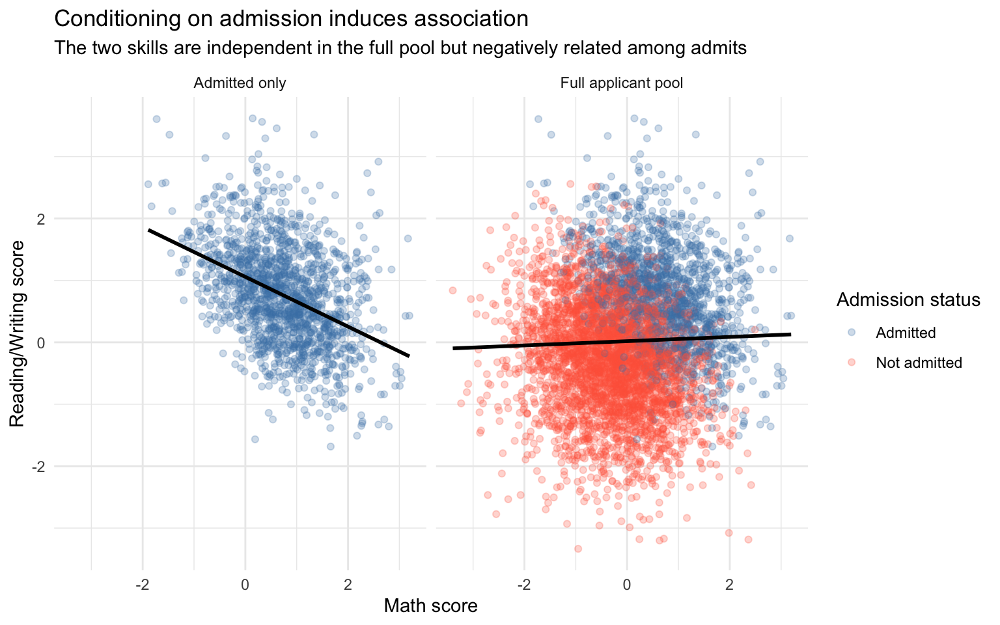
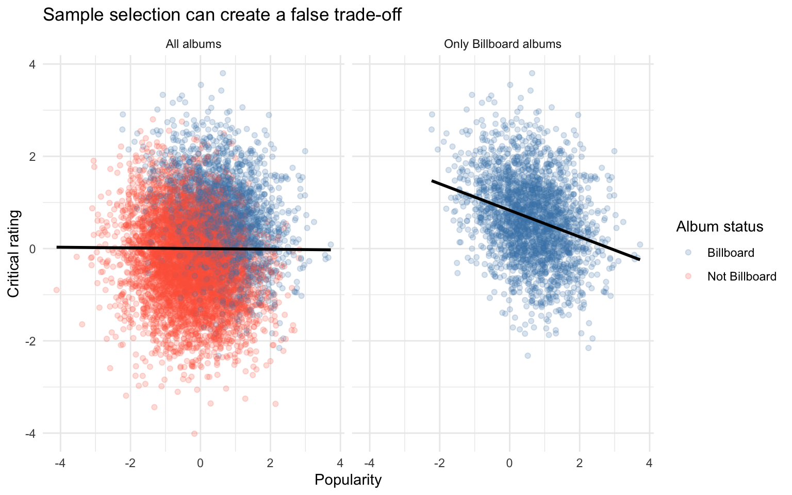
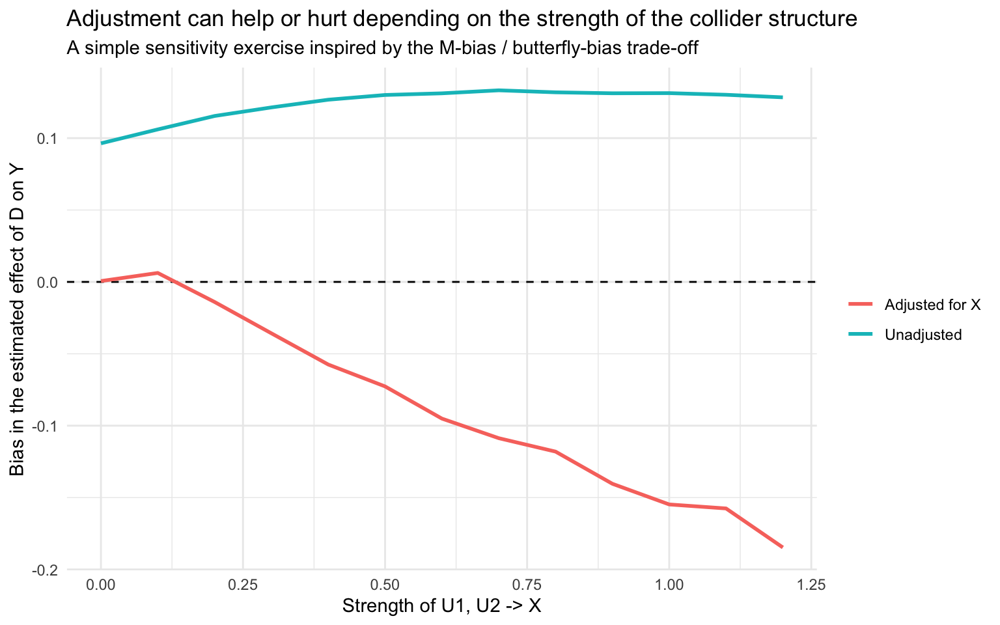

extract_term <- function(model, term) {
s <- coef(summary(model))
tibble(
term = term,
estimate = unname(s[term, "Estimate"]),
std.error = unname(s[term, "Std. Error"])
)
}Lab 7: Collider Bias in Practice
Overview
This lab turns the collider lecture into a set of practical simulations. We will focus on three questions:
- Why are colliders problematic?
- How do familiar applied problems become collider bias?
- Why can M-bias make adjustment ambiguous?
All examples use generated data. That is deliberate: the goal is to isolate the causal mechanism rather than to make a substantive claim about a real dataset.
Learning goals
By the end of the lab, you should be able to:
- recognize a collider in a DAG;
- explain why conditioning on a collider opens a non-causal path;
- identify sample selection, attrition, and bad proxies as special cases of collider bias;
- understand why a pre-treatment variable can still be dangerous to control for;
- compare naive, selected, and adjusted estimators in simulated data.
A helper function for model summaries
1. Why are colliders problematic?
We start with a simple admissions-style collider:
mathandreadingare independent in the applicant pool;- both increase the probability of being
admitted; - we then compare the full sample with the admitted-only sample.
DAG:
math -> admitted <- reading1.1 Simulate the full applicant pool
n <- 5000
math <- rnorm(n)
reading <- rnorm(n)
admission_score <- math + reading + rnorm(n, sd = 0.7)
admitted <- admission_score > quantile(admission_score, 0.70)
applicants <- tibble(
math = math,
reading = reading,
admitted = admitted
)
applicants %>%
summarise(
corr_full = cor(math, reading),
corr_admitted = cor(math[admitted], reading[admitted])
) %>%
kable(digits = 3, caption = "Correlation before and after conditioning on the collider")| corr_full | corr_admitted |
|---|---|
| 0.035 | -0.407 |
1.2 Visualize the induced association
plot_df <- bind_rows(
applicants %>%
mutate(
sample = "Full applicant pool",
status = if_else(admitted, "Admitted", "Not admitted")
),
applicants %>%
filter(admitted) %>%
mutate(
sample = "Admitted only",
status = "Admitted"
)
)
ggplot(plot_df, aes(x = math, y = reading, color = status)) +
geom_point(alpha = 0.25) +
geom_smooth(aes(group = 1), method = "lm", se = FALSE, color = "black") +
facet_wrap(~ sample) +
scale_color_manual(values = c("Admitted" = "steelblue", "Not admitted" = "tomato")) +
labs(
title = "Conditioning on admission induces association",
subtitle = "The two skills are independent in the full pool but negatively related among admits",
x = "Math score",
y = "Reading/Writing score",
color = "Admission status"
)
1.3 Compare a naive regression across samples
model_full <- lm(reading ~ math, data = applicants)
model_admitted <- lm(reading ~ math, data = filter(applicants, admitted))
bind_rows(
extract_term(model_full, "math") %>% mutate(model = "Full applicant pool"),
extract_term(model_admitted, "math") %>% mutate(model = "Admitted only")
) %>%
select(model, estimate, std.error) %>%
kable(digits = 3, caption = "Regression slope for reading on math")| model | estimate | std.error |
|---|---|---|
| Full applicant pool | 0.034 | 0.014 |
| Admitted only | -0.402 | 0.023 |
Interpretation
- In the full pool, the slope should be near zero.
- Among admitted students, the slope becomes negative because admission is a collider.
- Nothing causal links math and reading here; the association is created by selection.
Reflection questions
- Why is the path between
mathandreadingblocked in the full sample? Answer: the path is blocked becausemathandreadingare independent in the applicant pool, and there is no causal path connecting them. - What exactly changes when we analyze only admitted students? Answer: when we analyze only admitted students, we are conditioning on the collider
admitted, which opens a non-causal path betweenmathandreading. - Why is the induced association negative rather than positive? Answer: the induced association is negative because, in the admitted sample, higher math scores are associated with lower reading scores (and vice versa), due to the selection mechanism.
2. Problems that are just collider bias
This section turns the abstract collider into three applied problems:
- sample selection / missing data;
- attrition;
- bad proxies.
2.1 Sample selection / missing data: the Billboard example
The lecture uses a music example:
popularitycritical_ratingon_billboard
DAG:
popularity -> on_billboard <- critical_ratingThe idea is simple: if we only analyze albums that make it onto the Billboard charts, then our dataset has already conditioned on a collider.
Simulate albums
n <- 8000
albums <- tibble(
popularity = as.numeric(scale(rnorm(n))),
critical_rating = as.numeric(scale(rnorm(n)))
) %>%
mutate(
billboard_score = 0.9 * popularity + 0.9 * critical_rating + rnorm(n, sd = 1),
on_billboard = billboard_score > quantile(billboard_score, 0.70)
)
albums %>%
summarise(
corr_full = cor(popularity, critical_rating),
corr_billboard = cor(popularity[on_billboard], critical_rating[on_billboard])
) %>%
kable(digits = 3, caption = "Popularity and critical rating in the full population vs. charted albums")| corr_full | corr_billboard |
|---|---|
| -0.007 | -0.286 |
Plot full population vs. selected sample
plot_albums <- bind_rows(
albums %>%
mutate(
sample = "All albums",
status = if_else(on_billboard, "Billboard", "Not Billboard")
),
albums %>%
filter(on_billboard) %>%
mutate(
sample = "Only Billboard albums",
status = "Billboard"
)
)
ggplot(plot_albums, aes(x = popularity, y = critical_rating, color = status)) +
geom_point(alpha = 0.20) +
geom_smooth(aes(group = 1), method = "lm", se = FALSE, color = "black") +
facet_wrap(~ sample) +
scale_color_manual(values = c("Billboard" = "steelblue", "Not Billboard" = "tomato")) +
labs(
title = "Sample selection can create a false trade-off",
x = "Popularity",
y = "Critical rating",
color = "Album status"
)
Compare regression slopes
billboard_full <- lm(critical_rating ~ popularity, data = albums)
billboard_selected <- lm(critical_rating ~ popularity, data = filter(albums, on_billboard))
bind_rows(
extract_term(billboard_full, "popularity") %>% mutate(model = "All albums"),
extract_term(billboard_selected, "popularity") %>% mutate(model = "Only Billboard albums")
) %>%
select(model, estimate, std.error) %>%
kable(digits = 3, caption = "Estimated relationship between popularity and critical rating")| model | estimate | std.error |
|---|---|---|
| All albums | -0.007 | 0.011 |
| Only Billboard albums | -0.288 | 0.020 |
Interpretation
A selected sample can manufacture a relationship that is weak or absent in the full population. Here, popularity and critical acclaim look like substitutes only because we restricted the analysis to albums that passed through the selection process.
Questions
- In this example, where does the conditioning happen: in the regression, or in the dataset itself? Answer: the conditioning happens in the dataset itself, because we are only analyzing albums that made it onto the Billboard charts. The regression is then run on this already selected sample, which has induced a correlation between popularity and critical rating.
- What would happen if we only had Billboard albums and forgot about the selection process? Answer: if we only had Billboard albums and forgot about the selection process, we would incorrectly conclude that popularity and critical rating are negatively correlated, when in fact they are positively correlated in the full population.
2.2 Attrition bias
Now we simulate an experiment or panel study where:
D= treatment;X= a baseline risk factor;Y= outcome;observed= whether the respondent remains in the sample.
We build attrition so that treatment and the risk factor both affect whether the outcome is observed.
Simulate attrition
n <- 10000
attrition_df <- tibble(
X = rnorm(n),
D = rbinom(n, size = 1, prob = 0.5)
) %>%
mutate(
Y = 2 * D + 1.5 * X + rnorm(n),
p_dropout = plogis(-0.5 + 0.9 * D + 0.9 * X),
dropout = rbinom(n, size = 1, prob = p_dropout),
observed = 1 - dropout
)
attrition_df %>%
summarise(
retention_rate = mean(observed),
retention_control = mean(observed[D == 0]),
retention_treated = mean(observed[D == 1])
) %>%
kable(digits = 3, caption = "Retention rates")| retention_rate | retention_control | retention_treated |
|---|---|---|
| 0.516 | 0.609 | 0.42 |
Estimate the treatment effect under different decisions
true_tau <- 2 # The true effect of D on Y in the data-generating process, computed from the simulation code above (Y = 2 * D + 1.5 * X + noise)
m_full <- lm(Y ~ D, data = attrition_df)
m_cc_naive <- lm(Y ~ D, data = filter(attrition_df, observed == 1))
m_cc_adjusted <- lm(Y ~ D + X, data = filter(attrition_df, observed == 1))
bind_rows(
extract_term(m_full, "D") %>% mutate(model = "Full sample (no attrition problem)", true_effect = true_tau),
extract_term(m_cc_naive, "D") %>% mutate(model = "Observed cases only", true_effect = true_tau),
extract_term(m_cc_adjusted, "D") %>% mutate(model = "Observed cases + adjust for X", true_effect = true_tau)
) %>%
mutate(bias = estimate - true_effect) %>%
select(model, estimate, std.error, true_effect, bias) %>%
kable(digits = 3, caption = "Attrition can open a collider path")| model | estimate | std.error | true_effect | bias |
|---|---|---|---|---|
| Full sample (no attrition problem) | 1.938 | 0.036 | 2 | -0.062 |
| Observed cases only | 1.711 | 0.048 | 2 | -0.289 |
| Observed cases + adjust for X | 1.988 | 0.028 | 2 | -0.012 |
Interpretation
- In the full sample, randomization keeps
Dindependent ofX, so the estimate is close to the true effect. - Among observed cases only, selection opens the path
D -> observed <- X -> Y, which creates bias. - If
Xis observed and we control for it, we can block that path again.
Questions
- Why is attrition not automatically a problem in every study? Answer: attrition is only a problem if it is related to both the treatment and the outcome (through the confounder
X), which creates a collider structure. If attrition were random or only related to one of those factors, it would not necessarily bias the estimate. - In this simulation, what makes attrition informative rather than harmless? Answer: attrition is informative because it depends on both the treatment (
D) and the baseline risk factor (X), which also affects the outcome (Y). This creates a collider structure where conditioning on being observed opens a non-causal path betweenDandYthroughX. - Why does adjusting for
Xhelp here? Answer: adjusting forXhelps because it blocks the non-causal path that was opened by conditioning on being observed. By controlling forX, we can isolate the direct effect ofDonYwithout the bias introduced by the collider structure.
2.3 Bad proxies
The lecture uses this example:
S= schooling;W= wages;U= ability (unobserved);T= later test score.
The bad proxy problem arises because T is affected by both schooling and ability.
To make the contrast clearer, we also create a good proxy:
Q_pre= an early test score that is affected by ability but not by later schooling.
Simulate a good and a bad proxy
n <- 12000
proxy_df <- tibble(
U = rnorm(n)
) %>%
mutate(
S = 0.8 * U + rnorm(n),
W = 1.0 * S + 1.2 * U + rnorm(n),
Q_pre = 1.0 * U + rnorm(n),
T_post = 1.5 * S + 1.5 * U + rnorm(n, sd = 0.6)
)Compare estimators
true_tau <- 1
m_naive <- lm(W ~ S, data = proxy_df)
m_oracle <- lm(W ~ S + U, data = proxy_df)
m_good_proxy <- lm(W ~ S + Q_pre, data = proxy_df)
m_bad_proxy <- lm(W ~ S + T_post, data = proxy_df)
bind_rows(
extract_term(m_naive, "S") %>% mutate(model = "Naive: no controls", true_effect = true_tau),
extract_term(m_oracle, "S") %>% mutate(model = "Oracle: control for true ability U", true_effect = true_tau),
extract_term(m_good_proxy, "S") %>% mutate(model = "Good proxy: early test Q_pre", true_effect = true_tau),
extract_term(m_bad_proxy, "S") %>% mutate(model = "Bad proxy: later test T_post", true_effect = true_tau)
) %>%
mutate(bias = estimate - true_effect) %>%
select(model, estimate, std.error, true_effect, bias) %>%
kable(digits = 3, caption = "Good and bad proxies do very different things")| model | estimate | std.error | true_effect | bias |
|---|---|---|---|---|
| Naive: no controls | 1.577 | 0.010 | 1 | 0.577 |
| Oracle: control for true ability U | 0.989 | 0.009 | 1 | -0.011 |
| Good proxy: early test Q_pre | 1.355 | 0.010 | 1 | 0.355 |
| Bad proxy: later test T_post | 0.160 | 0.019 | 1 | -0.840 |
Interpretation
- The naive model is biased because ability confounds schooling and wages.
- The oracle model recovers the true effect because it conditions on the real confounder.
- The good proxy reduces bias because it captures part of ability.
- The bad proxy can create collider bias because
T_postis itself caused by both schooling and ability.
Questions
- Why is
Q_prea better control thanT_post? Answer:Q_preis a better control because it is only affected by the unobserved abilityUand not by the treatmentS. This means that controlling forQ_prehelps to block the confounding path without introducing collider bias. In contrast,T_postis affected by bothSandU, so controlling for it opens a non-causal path betweenSandWthroughT_post, which can bias the estimate. - What path is opened when we condition on
T_post? Answer: When we condition onT_post, we open a non-causal path betweenSandWthroughT_post. - Why is “proxy” not a purely statistical label, but a causal one? Answer: “Proxy” is not a purely statistical label but a causal one because it refers to a variable that is used to represent or substitute for a causal factor (like ability) that is not directly observable. The effectiveness of a proxy in reducing bias depends on its causal relationship with the treatment and outcome variables, not just its correlation with the unobserved confounder.
3. M-bias
We will do this in two steps:
- a pure M-bias example, where adjustment creates bias;
- a trade-off example, inspired by the Ding & Miratrix discussion, where adjustment can reduce one bias while creating another.
3.1 Pure M-bias
In the pure version, the true causal effect of D on Y is 3.
DAG:
If we do not condition on X, the path between D and Y is blocked at the collider. If we do condition on X, we open the path D <- U1 -> X <- U2 -> Y.
Simulate pure M-bias
n <- 50000
m_df <- tibble(
U1 = rnorm(n),
U2 = rnorm(n)
) %>%
mutate(
X = 1.2 * U1 + 1.2 * U2 + rnorm(n),
D = 1.0 * U1 + rnorm(n),
Y = 3 * D + 1.0 * U2 + rnorm(n)
)
m_unadjusted <- lm(Y ~ D, data = m_df)
m_adjusted <- lm(Y ~ D + X, data = m_df)
bind_rows(
extract_term(m_unadjusted, "D") %>% mutate(model = "Unadjusted", true_effect = 3),
extract_term(m_adjusted, "D") %>% mutate(model = "Adjusted for X", true_effect = 3)
) %>%
mutate(bias = estimate - true_effect) %>%
select(model, estimate, std.error, true_effect, bias) %>%
kable(digits = 3, caption = "Pure M-bias: controlling for X can create bias")| model | estimate | std.error | true_effect | bias |
|---|---|---|---|---|
| Unadjusted | 3.004 | 0.004 | 3 | 0.004 |
| Adjusted for X | 2.774 | 0.004 | 3 | -0.226 |
Interpretation
This is the cleanest demonstration of the danger:
- without adjustment, the treatment effect estimate is close to zero;
- after conditioning on
X, a non-causal path opens and the estimate moves away from zero.
3.2 A Ding & Miratrix-inspired trade-off simulation
The lecture cites Ding & Miratrix when asking whether conditioning on X makes sense. The point is not that adjustment is always wrong, but that it can involve a trade-off.
We simulate a setting in which X plays two roles at once:
- it is a confounder-like variable because it affects both
DandY; - it is also a collider because it is caused by
U1andU2.
DAG:
A function to study the trade-off
simulate_tradeoff <- function(n = 30000,
m_strength = 0.0, # strength of the collider structure (U1, U2 -> X)
beta_x = 0.7, # strength of the confounding structure (X -> D and X -> Y)
alpha_x = 0.7, #
tau = 1.0) {
U1 <- rnorm(n)
U2 <- rnorm(n)
X <- m_strength * U1 + m_strength * U2 + rnorm(n)
D <- beta_x * X + 0.8 * U1 + rnorm(n)
Y <- tau * D + alpha_x * X + 0.8 * U2 + rnorm(n)
est_unadjusted <- coef(lm(Y ~ D))["D"]
est_adjusted <- coef(lm(Y ~ D + X))["D"]
tibble(
m_strength = m_strength,
model = c("Unadjusted", "Adjusted for X"),
estimate = c(est_unadjusted, est_adjusted),
true_effect = tau,
bias = estimate - true_effect
)
}Run the sensitivity exercise
grid_vals <- seq(0, 1.2, by = 0.1)
tradeoff_results <- map_dfr(grid_vals, ~ simulate_tradeoff(beta_x = 7, alpha_x = 0.7, tau = 1, m_strength = .x))
tradeoff_results %>%
kable(digits = 3, caption = "First rows of the trade-off simulation results")| m_strength | model | estimate | true_effect | bias |
|---|---|---|---|---|
| 0.0 | Unadjusted | 1.096 | 1 | 0.096 |
| 0.0 | Adjusted for X | 1.001 | 1 | 0.001 |
| 0.1 | Unadjusted | 1.106 | 1 | 0.106 |
| 0.1 | Adjusted for X | 1.006 | 1 | 0.006 |
| 0.2 | Unadjusted | 1.115 | 1 | 0.115 |
| 0.2 | Adjusted for X | 0.986 | 1 | -0.014 |
| 0.3 | Unadjusted | 1.121 | 1 | 0.121 |
| 0.3 | Adjusted for X | 0.964 | 1 | -0.036 |
| 0.4 | Unadjusted | 1.127 | 1 | 0.127 |
| 0.4 | Adjusted for X | 0.943 | 1 | -0.057 |
| 0.5 | Unadjusted | 1.130 | 1 | 0.130 |
| 0.5 | Adjusted for X | 0.927 | 1 | -0.073 |
| 0.6 | Unadjusted | 1.131 | 1 | 0.131 |
| 0.6 | Adjusted for X | 0.905 | 1 | -0.095 |
| 0.7 | Unadjusted | 1.133 | 1 | 0.133 |
| 0.7 | Adjusted for X | 0.891 | 1 | -0.109 |
| 0.8 | Unadjusted | 1.132 | 1 | 0.132 |
| 0.8 | Adjusted for X | 0.882 | 1 | -0.118 |
| 0.9 | Unadjusted | 1.131 | 1 | 0.131 |
| 0.9 | Adjusted for X | 0.860 | 1 | -0.140 |
| 1.0 | Unadjusted | 1.131 | 1 | 0.131 |
| 1.0 | Adjusted for X | 0.845 | 1 | -0.155 |
| 1.1 | Unadjusted | 1.130 | 1 | 0.130 |
| 1.1 | Adjusted for X | 0.842 | 1 | -0.158 |
| 1.2 | Unadjusted | 1.128 | 1 | 0.128 |
| 1.2 | Adjusted for X | 0.815 | 1 | -0.185 |
Plot the bias of the adjusted and unadjusted estimators
ggplot(tradeoff_results, aes(x = m_strength, y = bias, color = model)) +
geom_hline(yintercept = 0, linetype = 2) +
geom_line(linewidth = 1) +
labs(
title = "Adjustment can help or hurt depending on the strength of the collider structure",
subtitle = "A simple sensitivity exercise inspired by the M-bias / butterfly-bias trade-off",
x = "Strength of U1, U2 -> X",
y = "Bias in the estimated effect of D on Y",
color = NULL
)
Interpretation
- Collider structure means that adjusting for
Xcan create bias, and the strength of the collider structure depends on how stronglyU1andU2affectX. - When the collider structure is weak, adjusting for
Xmay help because it blocks confounding throughX. - As the collider structure gets stronger, adjusting for
Xopens a more important non-causal path. - There is no automatic rule that says “always adjust” or “never adjust”. It depends on the specific causal structure (the functional form) and the relative strength of the confounding and collider paths.
- IN THIS EXAMPLE: When beta_x is large and as m_strength increases, the bias from adjusting for X can become larger than the bias from not adjusting, which is why the adjusted estimator can perform worse than the unadjusted one in some cases.
- IN THIS EXAMPLE: When alpha_x ### Questions
- Why does the relative performance of the adjusted estimator change as
m_strengthincreases? Answer: asm_strengthincreases, the collider bias from adjusting forXbecomes stronger, while the confounding bias from not adjusting forXmay not change as much. - What exactly is the trade-off in this simulation? Answer: the trade-off is between reducing confounding bias by adjusting for
Xand introducing collider bias by adjusting forX. - How does this section change the rule of thumb “control for all pre-treatment variables”? Answer: it shows that the rule of thumb is not universally valid, and that we need to consider the full DAG and the specific causal structure of the problem before deciding whether to adjust for a variable.
4. Wrap-up
This lab showed three increasingly demanding lessons:
- Collider conditioning creates association even when no causal path exists.
- Sample selection, attrition, and bad proxies are often just collider bias under different names.
- M-bias shows why covariate adjustment must be guided by the full DAG, not by a mechanical rule.